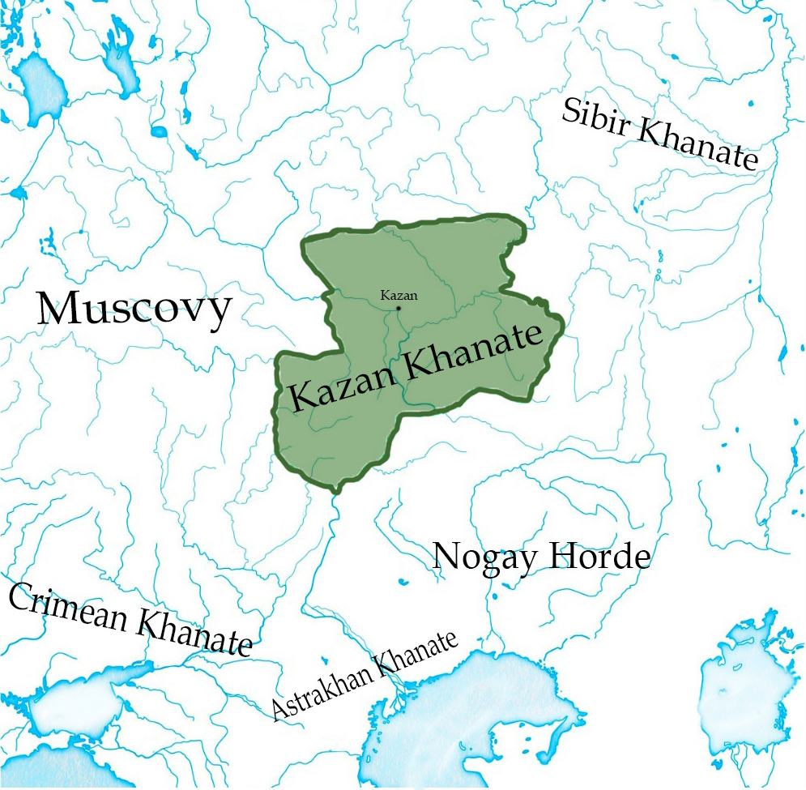
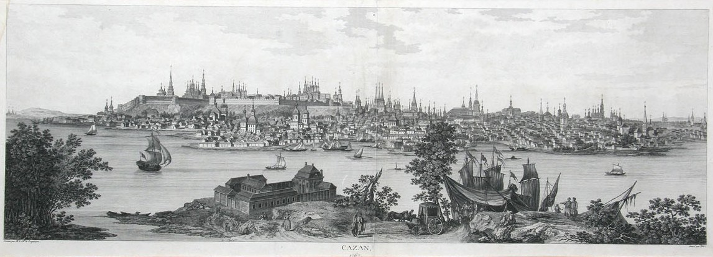

История Казани
Согласно официальной версии, принятой в настоящее время, город был основан более 1000 лет назад. Предполагаемая дата возникновения городского поселения на месте Казани — 1004—1005 годы. Основанием для такой датировки является найденная во время раскопок на территории Казанского кремля чешская монета, датированная правлением св. Вацлава (предположительно, чеканки 929—930 годов) и ставшая самой ранней чешской монетой, остатки каменной кладки и деревянной городской ограды, предметы ремёсел и утвари (накладка венгерского типа, женские бусы и прочее), а также другие артефакты с менее явной датировкой. По официальным утверждениям, к изучению находок, имеющих отношение к возрасту Казани, были привлечены специалисты из 20 городов России и из 22 стран мира.
Волжская Булгария
Казань была основана как пограничная крепость на севере Волжской Булгарии. В XIII—XIV веках Казань переживает рост, становится важным торговым и политическим центром в составе Золотой Орды. Росту города способствует и удачное географическое положение на пересечении крупных торговых путей, соединяющих Восток и Запад. Первое письменное упоминание о городе встречается в Рогожском летописце: «В лето 6899 (1391 г.)…Того же лета новгородци Новагорода Великаго да и устьюжане гражане и прочии к тому совокупившеся выидоша в насаедах и в ушкуех рекою Вяткою на низ и взяша Жукотин, и пограбиша весь, и Казань, и пакы выидоша на Волгу и пограбиша все всех, и тако поидоша прочь». В этой летописи Казань уже названа центром одного из султанатов, наряду с Болгаром, Джукетау и Керменчуком. В тот же период началась чеканка собственных монет с указанием места чеканки — «Булгар аль-Джадид», то есть Новый Булгар.
Казанское ханство
 В 1438 году булгарская крепость Казань (Иске-Казань) была захвачена свергнутым золотоордынским ханом Улу-Мухамеддом, который убил местного князя Лебедия и перенёс крепость на современное место (по русским летописям). Город стал столицей Казанского ханства. Развивалось производство кожаных, гончарных изделий, оружия. Казань имела торговые связи с Москвой, Крымом, Турцией и другими регионами.
Около 1469 года город посетил Афанасий Никитин, упомянувший его в своих путевых записках «Хожение за три моря».
Череда войн с Московским княжеством сначала вынудила Москву платить дань Казанскому ханству, а в итоге привела к взятию Казани войсками Ивана Грозного в 1552 году, с последующим разрушением большей части города и переселением татар на болотистые берега озера Кабан, где была заложена Старо-татарская слобода Казани. После окончательного подавления восстаний в Казанском крае у города началась новая эпоха в истории — в составе Русского царства.
В составе России
 В 1556 году началось строительство нового, белокаменного Кремля, в опустевший город (татарам было запрещено селиться ближе 30 вёрст от города) вселили 7 тысяч русских, которых по приказу Ивана Грозного переселяли целыми слободами из разных русских городов, а казанские татары были выселены за стену деревянного посада Казани, за проток Булак, положив, таким образом, начало уникальной территории старой Казани — Старо-Татарской слободе. На рубеже XVI и XVII столетий в Казани была основана одна из первых в России типографий. В XVII веке в городе наблюдался экономический рост, были заложены ремесленные слободы, появились первые мануфактуры. В 1708 году Казань стала столицей крупной Казанской губернии. С 1760-х годов застройка города принимает упорядоченный характер, появились деревянные мостовые, мосты через Булак и Казанку. Всего в Казани к концу XVIII века проживало около 22 тысяч человек, а с пригородными слободами — более 40 тысяч, и из них только около десяти процентов — татары. Город стал образовательным и культурным центром Поволжья: в 1758 году в Казани открылась первая в России провинциальная гимназия, в 1771 году — первые медресе, в 1791 году появился пос.тоянный театр. Важным событием стало учреждение в 1804 году Казанского университета — третьего в России, закрепившего за городом статус крупного научного центра. Во второй половине XIX века произошли существенные изменения в инфраструктуре Казани: появились газовое (1874) и электрическое (1897) освещение, конка (1875) и электрический трамвай (1899), телеграф (1859) и телефон (1881).
XX век по наше время
В XX веке город ожидали большие потрясения. Казань стала одним из центров революции, в 1918 году за город в ходе гражданской войны велись ожесточённые бои. В 1920 году был подписан Декрет об образовании Автономной Татарской Социалистической Советской Республики со столицей в Казани. В 1930-е годы началась интенсивная индустриализация города, сопровождавшаяся быстрым ростом населения. Были построены новые предприятия, введены в строй новые теплоэлектроцентрали. В годы Великой Отечественной войны в Казань были эвакуированы крупные заводы (в том числе Московский авиазавод имени С. П. Горбунова, Воронежский моторостроительный завод), переброшена часть Академии наук СССР, промышленные предприятия были переведены на производство военной продукции для нужд фронта. Казань была включена в число 20 городов СССР, подлежащих атомной бомбардировке, согласно первому послевоенному плану войны против СССР, разработанному в США уже в 1945 году, а также включался и в последующие подобные планы
После Великой Отечественной войны продолжилось активное развитие города, в 1979 году население города превысило 1 миллион человек.
В 1990 году город был объявлен столицей суверенной Республики Татарстан. С начала рыночной эпохи в 1990-е годы Казани удалось стать одним из важнейших межрегиональных политических, финансовых, спортивных, туристических центров страны. Вместе с тем, вплоть до начала 2000-х годов Казань пользовалась дурной славой одного из самых криминальных городов России[источник не указан 910 дней. В списке российских городов по численности населения город поднялся на 5-ое место. В 2005 году было торжественно отпраздновано тысячелетие Казани, к которому были сооружены Казанский метрополитен, мост Миллениум и ряд других объектов. Казанский Кремль стал объектом-памятником ЮНЕСКО, город стало посещать около миллиона туристов в год.